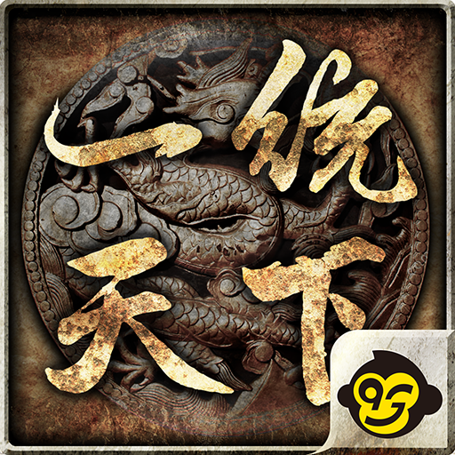
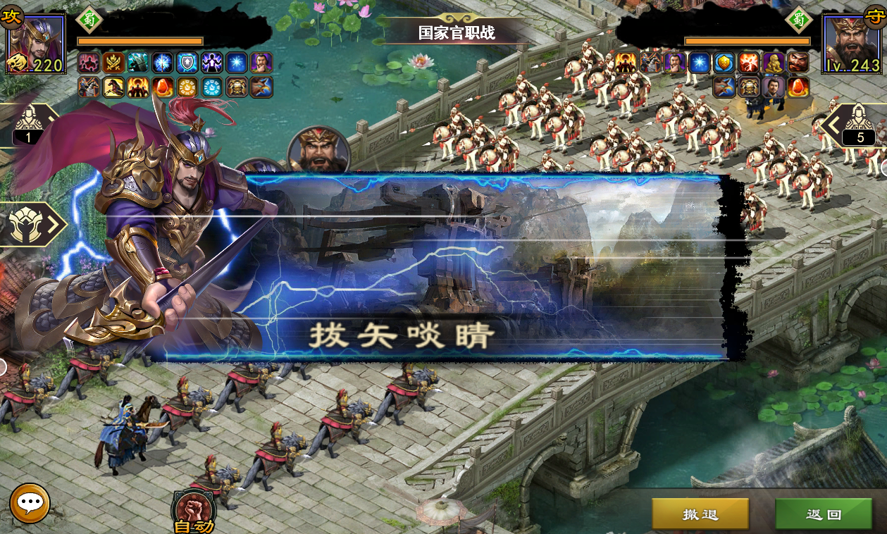
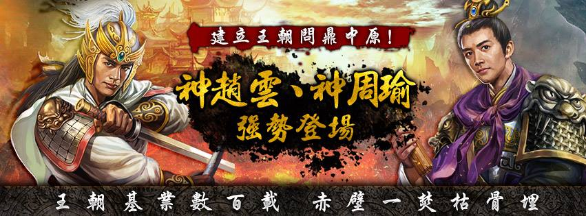
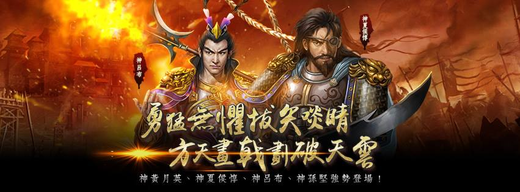
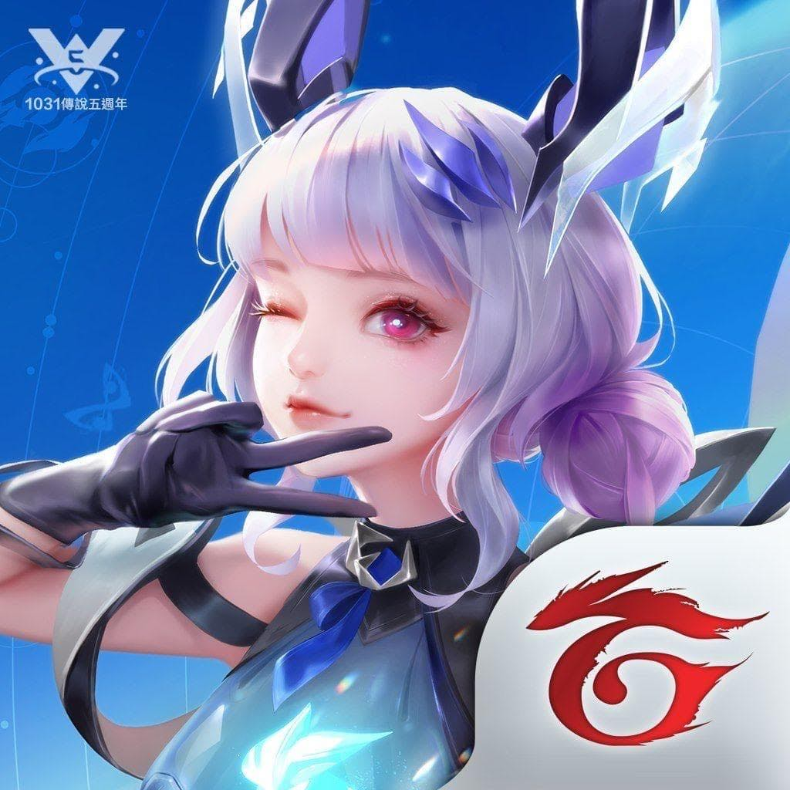
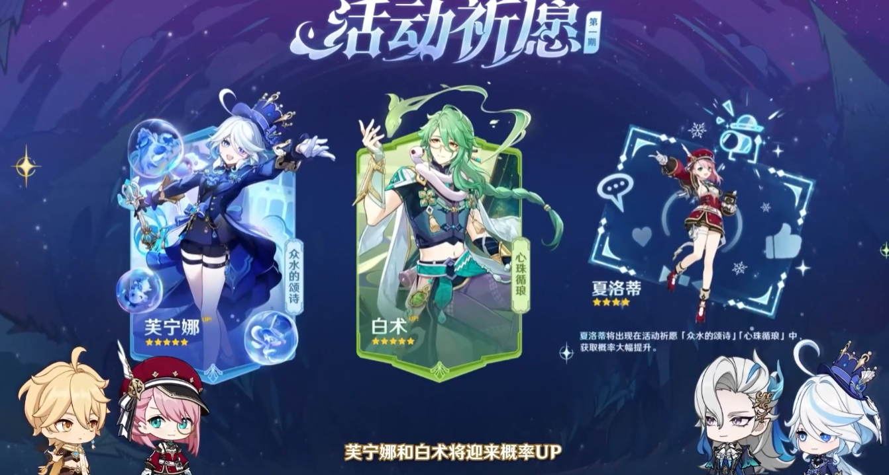
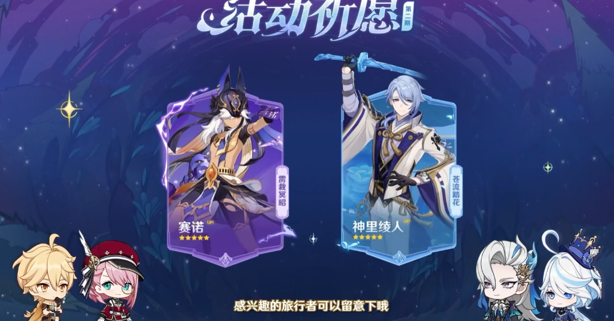
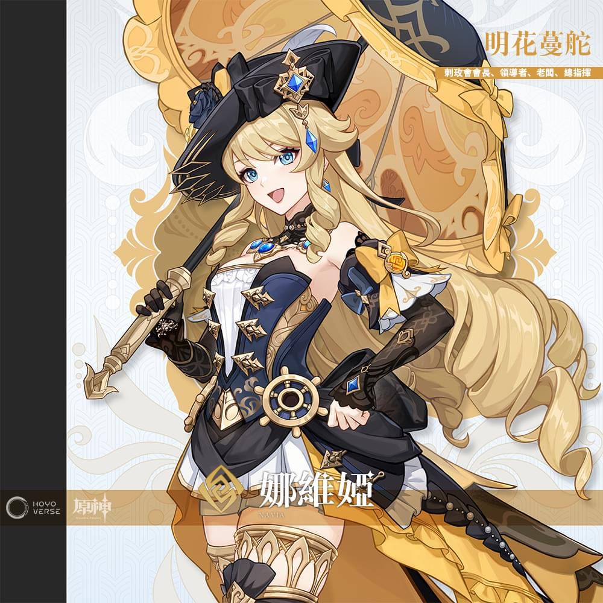

主頁
餐後滿意度調查表
新聞專欄
遊戲啟動列表:
跳转到 一統天下
跳转到 傳說對決
跳转到 原神啟動
一統天下

官網:點擊此處
開始遊戲:點擊此處
最新版本資源包下載 :點擊此處
當前版本介紹(14.1)
秋风十里，指尖岁月，不知不觉中，已至年末，风中多了几分清寒。窗前赏花，炉边沏茶；日子沉静，安稳平淡，愿秋色向晚，人间安暖。
秋日逐渐褪去，但故事依旧。《一统天下》 “步履半生，清风自得，凭有明珠一颗，照破山河。”
一、 新增魂契武将
二龙争战决雌雄，赤壁楼船扫地空。江东之上，布局全场，后以火攻大败曹军百万，成就“赤壁之战”佳话！
在新版中，“大都督”周瑜进阶“魂将”之列，运筹帷幄，智霸战场！
.png)
【文武双全】周瑜惊艳登场！魂契开启后除基础的专属排阵、战法特效等之外，更能够将兵种替换为7级“破甲神弩”！
伴随着专属魂契更有专属形象“文韬武略”——周瑜，及专属魂契天赋！
孤月独明勘比伦，至今功迹照乾坤。乱军之中，冲破敌营，后遭暗箭所伤成就典故“拔矢啖睛”！
在新版中，夏侯惇进阶“魂将”之列，披荆斩棘，制霸战场！

【天之奇才】夏侯惇惊艳登场！魂契开启后除基础的专属排阵、战法特效等之外，更能够将兵种替换为7级“苍狼战骑”！
伴随着专属魂契更有专属形象“独目苍狼”——夏侯惇，及专属魂契天赋！
二、 新增武将形象&优化部分突破形象

【博学多才】庞统

【新突破形象】周泰
【新突破形象】甄姬
三、 战魂系统
悲挽长弓断魂箭，烟云散处最伤心。绝代战魂生死际，一语逆天尽解疑。两军交锋，主将首当其冲，
刀光剑影霎时间已数十回合而过，回到战场却诧然发现双方主将未动丝毫，而真正的战果却早已在意念中一闪而过。
【功能入口】：

战魂共有黄、红、紫三个品质，不同战魂之间属性种类相同，但品质越高，配套属性越强

每一套战魂共有六个部件，集齐相应的三件可以激活初级效果，集齐全部后可激活最终套装属性。
四、 其他优化
1.酒馆界面对魂契武将添加魂契标识
2.酒馆界面未获得的武将显示解锁条件
更新於2023/11/13
往期版本



傳說對決

官網:點擊此處
官方Ig:點擊此處
官方Fb:點擊此處
官方youtube:點擊此處
遊戲介紹:
Garena 傳說對決是一款節奏快速、輕鬆又不失競技成分的MOBA 手遊，經典玩法加上獨特的輪盤指向施法的直覺操作模式，輕鬆競技於指掌之間！
遊戲強調英雄陣容搭配、裝備、技能施放操作，細膩的畫風質感與公平競技，加上內建語音及附近組隊系統，讓你/妳隨時隨地召喚手中的英雄！
個人簡歷:

Uid: ₊˚‧̶L̶i̶̶y̶u̶e̶.₰₊+ 五路都會一點的萌新一枚 歡迎各位大佬加好友一起玩~^^
於2018/05/20 加入傳說對決
2023/02/01 登頂全服艾翠絲
2023/08/01 登頂全服伊格
2023/09/29 璀璨達陣 wr 68.3%
2023/10/03 千場克里希達陣
2023/11/04 芽芽專精達陣
2023/11/09 海倫專精達陣
下輪目標 愛麗絲專精
附上人權圖


原神啟動(Genshin impact)
官網:點擊此處
官方Ig:點擊此處
官方Fb:點擊此處
官方youtube:點擊此處
Hoyolab:點擊此處
遊戲介紹:
《原神》是一款開放世界冒險角色扮演遊戲。 踏上跨越奇幻世界提瓦特大陸的旅程。 在這個廣闊世界中，探索七個國家，
遇到擁有獨特性格和能力的不同角色，並與他們一起對抗強大的敵人，並同時尋找您失散的手足。
自由冒險，沈浸在充滿生命力的世界中，讓好奇心引領您揭開它所有的神秘面紗。
個人簡歷:
台港澳服(𝑯𝒌.𝑻𝒘.𝑴𝒐 𝑼𝒊𝒅): 𝟗𝟎𝟒𝟖𝟖𝟖𝟕𝟑𝟓
亞服(𝑨𝒔𝒊𝒂 𝑼𝒊𝒅): 𝟖𝟗𝟏𝟖𝟕𝟏𝟏𝟒𝟖
歡迎各位大佬加好友一起玩~^^
附上人權圖
.png)
當前up角色池 4.2(上半)

當前up角色池 4.2(下半)

下期up角色池預測 4.3(上半+下半)

同時新增全新角色 刺玫會會長-娜維婭

娜維婭‧明花蔓舵
刺玫會會長、領導者、老闆、總指揮
從外表來看，娜維婭小姐無疑是一位完美的楓丹淑女。
她習慣穿著設計繁複的裙裝，戴著精緻的禮帽，手腕上掛著一把綴著寶石與蝴蝶結的傘。
然後奔走在楓丹廷的街頭巷尾、秋分山的原野上，和灰河那些不知名的角落裡。
拖在身後的裙襬和那把比看起來要重上許多的傘從未影響過她的行動——她如一隻靈巧的鳥，為那些陷入困境的人們帶來刺玫會送出的好消息。
也許正因如此，娜維婭才成為了知名記者夏洛蒂最喜歡取材的對象之一。
蒸汽鳥報社的展廳裡就掛著一幅與她有關的畫片，其名為《飛翔的黃玫瑰》。
當然，畫片的展出徵得了當事人的允許與大力支持，還請不必多慮。
「小時候我們玩過一種桌上遊戲，她負責扮演冒險者，我則是主持人。我自認擅長應對突發狀況，也還是經常被她的選擇和回答搞得措手不及。
不過，就是要這樣才有趣。」
——克洛琳德
◆ 姓名：娜維婭
◆ 稱號：明花蔓舵
◆ 刺玫會會長、領導者、老闆、總指揮
◆ 神之眼：岩
◆ 命之座：野薔薇座